Image Warping and Mosaicing
Stitching photos into mosaics with homographies, from points I clicked by hand.
Every photo taken is 1920 x 2560. Points are written as (x, y) in pixels, where
(0, 0) is the centre of the top-left pixel. None of cv2.findHomography,
cv2.warpPerspective, skimage.transform.warp or any other homography,
warping or interpolation function is used. The library calls doing real work are
np.linalg.lstsq for solving the linear system, and scipy's distance transform and
Gaussian blur for blending.
Part A: Image warping and mosaicing
A.1: Shooting the pictures
For a homography to line up two photos exactly, the camera can only rotate between them (the centre of projection stays in the same place), or the scene has to be flat. So for each set I stood in one spot and turned the phone, with about half of each photo overlapping the next. I took more photos than I needed and used 4 next to each other from each set. One of the two middle photos is the reference, which the other three get warped onto, so no photo is more than two photos away from it.
Set 1: Street
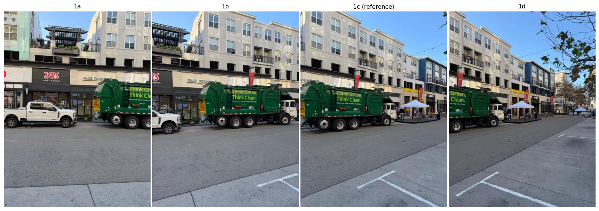
Set 2: Toy shop
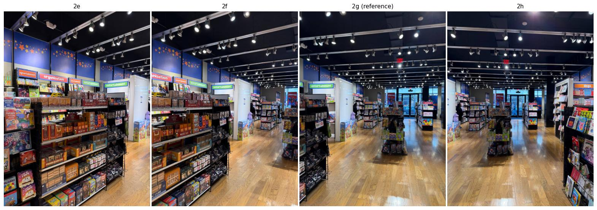
Set 3: Buildings
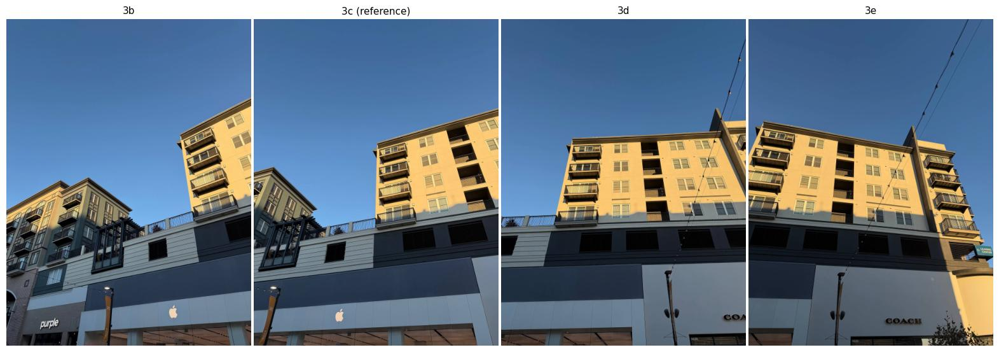
I took these by hand without a tripod, so the phone also moved a little between shots instead of only rotating. This matters most when something is close to the camera, which comes up again in A.4 (the garbage truck in set 1 and the shelves in set 2). Set 3 is all buildings far away, so there is almost nothing close to the camera.
A.2: Recovering homographies
Main idea: a homography is a 3 x 3 matrix H that sends a point p = (x, y, 1) in one photo to p' = Hp in the other. It has 8 unknowns, since H can be scaled by anything without changing where the points go, so the bottom-right entry is set to 1. Writing out what H does to one point (x, y) gives
u = (h1x + h2y + h3) / (h7x + h8y + 1), v = (h4x + h5y + h6) / (h7x + h8y + 1)
where (u, v) is where the point lands. Multiplying both sides by the bottom makes them linear in h, so each pair of points gives two rows of a linear system Ah = b:
[x y 1 0 0 0 -ux -uy] h = u
[0 0 0 x y 1 -vx -vy] h = v
4 pairs of points give exactly 8 equations, but then a mistake of a pixel or two in one click changes H a lot. So I clicked 8 to 17 pairs for each pair of photos, and the system is solved by least squares, which finds the H that gets all of them as close as possible.
def system(pts1, pts2):
A, b = [], []
for (x, y), (u, v) in zip(pts1, pts2):
A.append([x, y, 1, 0, 0, 0, -u * x, -u * y])
A.append([0, 0, 0, x, y, 1, -v * x, -v * y])
b += [u, v]
return np.array(A), np.array(b)
def computeH(pts1, pts2):
A, b = system(pts1, pts2)
h = np.linalg.lstsq(A, b, rcond=None)[0]
return np.append(h, 1).reshape(3, 3)Clicking the points
I clicked the points with the correspondence tool made by a previous student, which saves them as a JSON file for each pair of photos. Each photo is matched to its neighbour on the reference's side, so for set 1 the pairs are 1a with 1b, 1b with 1c, and 1d with 1c. I picked sharp corners that are easy to find exactly in both photos, like window corners, the edges of signs and shelf corners, and stayed away from anything that could move (people, leaves, cars (except in set 1 where the lorry was stationary)).
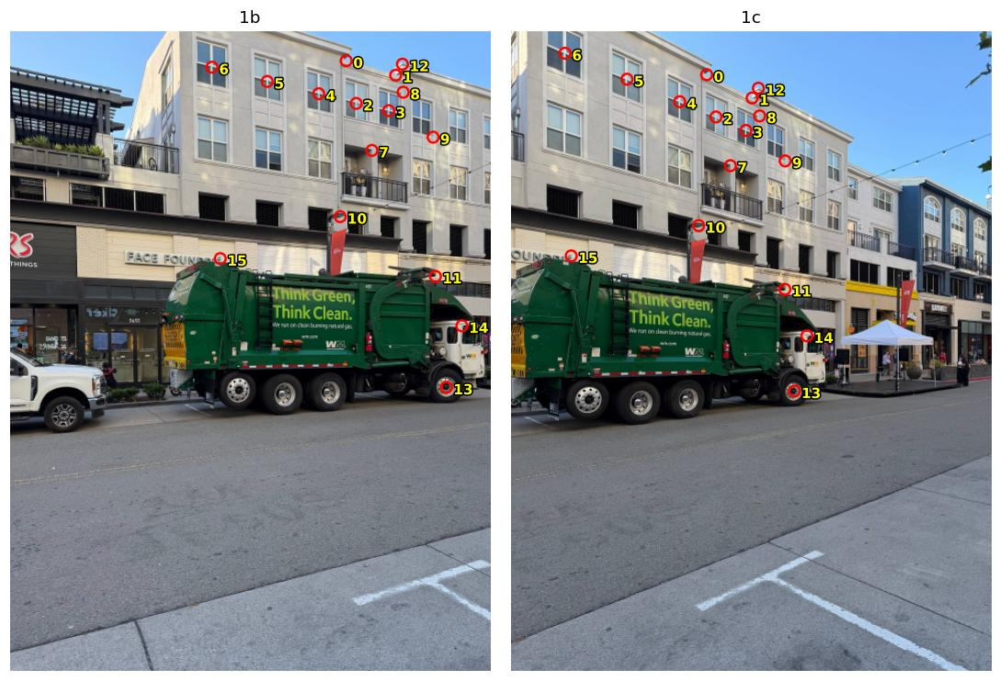
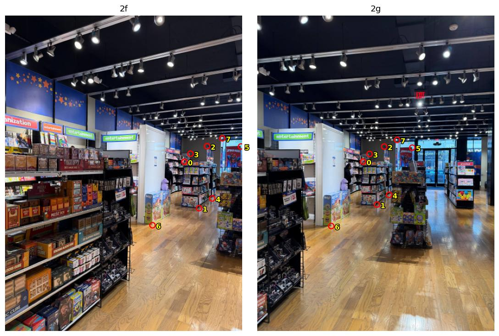
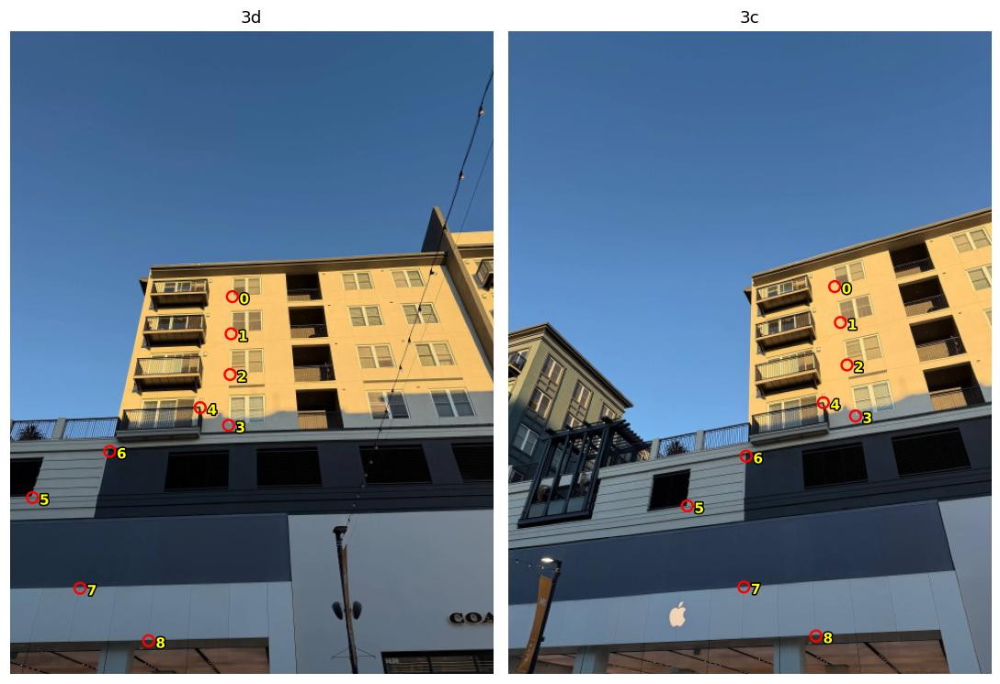
To check the clicks, I sent every point through its H and measured how far it lands from where I clicked it in the other photo. My first tries on 1b and 1c had errors of up to about 40 pixels. It turned out the problem was not the clicking, but that the points were at different distances from the camera. The points on the building agreed with each other to within 1 to 4 pixels, while the points on the road, which is much closer, were 30 to 40 pixels off from them. This is parallax: since my phone moved a little between the two photos and did not just rotate, close things shift more than far things, and one homography can only line up one of them. So I clicked again using only the building and things at about the same distance. The same thing happened with the shelves in the toy shop, which is why the points in 2f to 2h are all at the far end of the shop, and the points between 2e and 2f are all on the one shelf unit.
| pair | points | median error (px) | max error (px) |
|---|---|---|---|
| 1a → 1b | 15 | 2.83 | 5.58 |
| 1b → 1c | 16 | 2.27 | 3.80 |
| 1d → 1c | 17 | 2.55 | 5.66 |
| 2e → 2f | 13 | 3.76 | 6.54 |
| 2f → 2g | 8 | 1.98 | 3.60 |
| 2h → 2g | 10 | 1.93 | 5.82 |
| 3b → 3c | 9 | 1.77 | 3.79 |
| 3d → 3c | 9 | 0.83 | 4.13 |
| 3e → 3d | 10 | 2.54 | 4.93 |
The system of equations
For 1b → 1c, the first two pairs of points are (1343, 116) → (781, 172) and (1541, 174) → (963, 265), which give the first four rows of A and b:
A = [[1343 116 1 0 0 0 -1048883 -90596] b = [781
[ 0 0 0 1343 116 1 -230996 -19952] 172
[1541 174 1 0 0 0 -1483983 -167562] 963
[ 0 0 0 1541 174 1 -408365 -46110] 265
... 32 rows in total for the 16 pairs of points ...] ...]Solving all 32 rows by least squares gives the homography from 1b to 1c:
H(1b -> 1c) = [[ 1.38393 -0.02039 -861.86872]
[ 0.28727 1.22926 -308.77402]
[ 0.00020 -0.00000 1.00000]]The top-left 2 x 2 part is close to a scale of about 1.3 with some shear, the -862 moves 1b about 860 pixels left (1b is to the left of 1c, so its points have to move left to land where they are in 1c), and the small 0.0002 in the bottom row is the perspective part, which makes 1b get bigger the further left you go.
Chaining to the reference
The outer photos (1a, 2e and 3e) are not clicked against the reference directly, since they hardly overlap with it. Instead they are matched to their neighbour, and the two homographies are multiplied, e.g. H(1a → 1c) = H(1b → 1c) H(1a → 1b), since sending a point from 1a to 1b and then from 1b to 1c is the same as sending it straight from 1a to 1c. The product is divided by its bottom-right entry so it is 1 again.
def to_reference(photos, ref, pair_H):
r = photos.index(ref)
Hs = {ref: np.eye(3)}
for i in range(r - 1, -1, -1): # left of ref
Hs[photos[i]] = Hs[photos[i + 1]] @ pair_H(photos[i], photos[i + 1])
for i in range(r + 1, len(photos)): # right of ref
Hs[photos[i]] = Hs[photos[i - 1]] @ pair_H(photos[i], photos[i - 1])
return {p: H / H[2, 2] for p, H in Hs.items()}H(1a -> 1c) = [[ 2.14979 0.05717 -2645.30018]
[ 0.75402 1.92655 -1072.82407]
[ 0.00061 0.00001 1.00000]]Compared with H(1b → 1c), every part is bigger: 1a moves about twice as far, and gets stretched about twice as much, which is what makes the left end of the street mosaic so big in A.4.
A.3: Warping the images
Main idea: inverse warping. Going forwards (sending every input pixel through H) leaves holes, since the input pixels get spread out and some output pixels never get hit. So instead, for every pixel in the output, H-1 says where it comes from in the input, and the colour is read from there. That point is almost never exactly on a pixel, so it needs interpolating.
- Nearest neighbour: round the point to the closest input pixel and copy it.
- Bilinear: take the 4 input pixels around the point and average them, weighted by how close each one is (if the point is 30% of the way from the left pixel to the right pixel, the left one gets 70% of the weight).
Both return an alpha mask as well, which is 1 where the output pixel came from inside the photo and 0 where it fell outside (those are left black, and shown as white on this page). The size of the output is found by sending the 4 corners of the photo through H and taking the box around them.
def source_coords(H, shape, top_left):
h, w = shape
xs, ys = np.meshgrid(np.arange(w) + top_left[0], np.arange(h) + top_left[1])
src = apply_H(np.linalg.inv(H), np.column_stack([xs.ravel(), ys.ravel()]))
return src[:, 0].reshape(h, w), src[:, 1].reshape(h, w)
def warpImageNearestNeighbor(im, H, shape, top_left):
x, y = source_coords(H, shape, top_left)
x, y = np.round(x).astype(int), np.round(y).astype(int)
alpha = (x >= 0) & (x < im.shape[1]) & (y >= 0) & (y < im.shape[0])
out = np.zeros(shape + im.shape[2:], np.float32)
out[alpha] = im[y[alpha], x[alpha]]
return out, alpha.astype(np.float32)
def warpImageBilinear(im, H, shape, top_left):
x, y = source_coords(H, shape, top_left)
alpha = (x >= 0) & (x <= im.shape[1] - 1) & (y >= 0) & (y <= im.shape[0] - 1)
x0 = np.clip(np.floor(x).astype(int), 0, im.shape[1] - 2)
y0 = np.clip(np.floor(y).astype(int), 0, im.shape[0] - 2)
dx = (x - x0).astype(np.float32)[..., None]
dy = (y - y0).astype(np.float32)[..., None]
top = im[y0, x0] * (1 - dx) + im[y0, x0 + 1] * dx
bottom = im[y0 + 1, x0] * (1 - dx) + im[y0 + 1, x0 + 1] * dx
out = top * (1 - dy) + bottom * dy
out[~alpha] = 0
return out, alpha.astype(np.float32)x0 and y0 are kept at least one pixel away from the right and bottom edge, so x0 + 1 and y0 + 1 are always inside the photo (for a point exactly on the last column, dx is then 1, which gives the right answer).
Rectification
To test the warping before making mosaics, I took photos of two things I know are rectangles and made them rectangular again. Here there is only one photo, so the second set of points is made up: I clicked the 4 corners of the rectangle, and they get sent to a rectangle as wide as the average of its top and bottom edges and as tall as the average of its two sides, starting at the top-left corner. I do not know the real width and height of either object, so this is only a guess of their shape, but it keeps the result about the same size as in the photo.
Parts of the photo far from the rectangle can get stretched a lot, so the output is cut off a quarter of the photo's size past each edge.
A metal panel on a kiosk
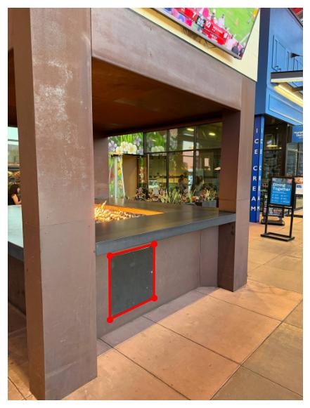
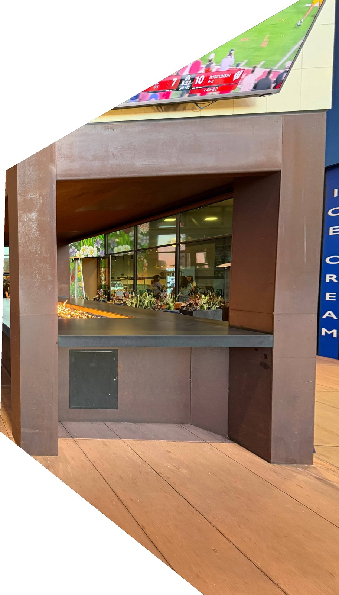
The panel is now a rectangle, and so is the whole front of the kiosk (the counter, the posts and the top of the frame are all straight and level now), since they are on the same flat surface. The floor and the TV are not on that surface, so they still look slanted.
A glass door
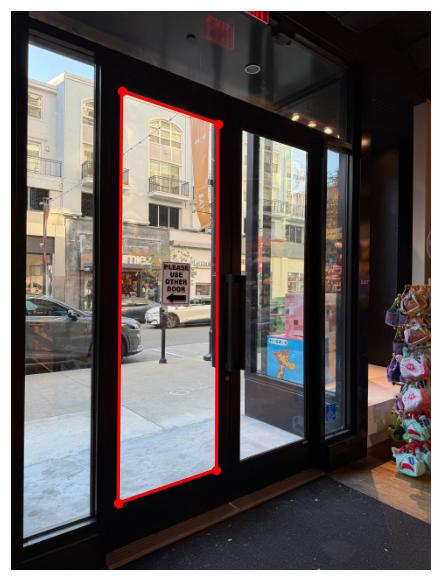
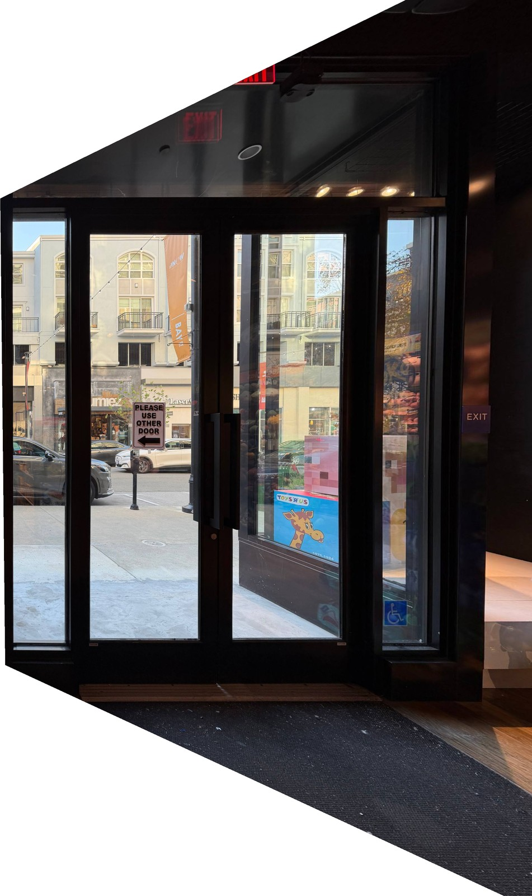
Both doors and the side window are rectangles again, as if I was standing straight in front of them. The street outside the glass is much further away than the door, but it is seen through the glass, so it is fixed too.
Nearest neighbour vs bilinear
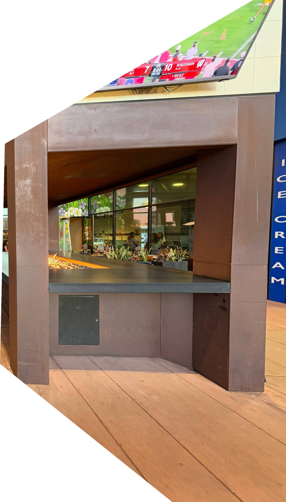
From far away the two look the same, so here are close-ups with every pixel shown 4 times bigger:
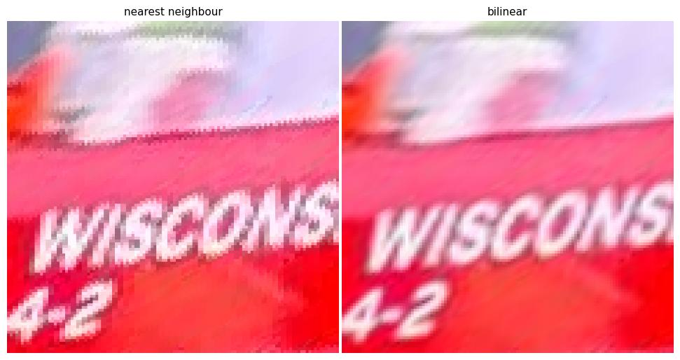
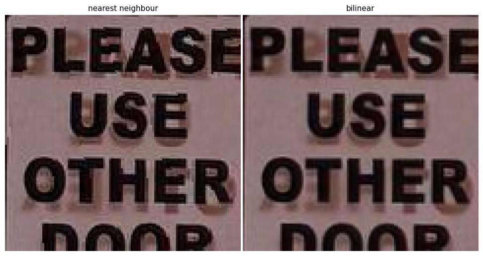
| photo | output size | nearest neighbour | bilinear |
|---|---|---|---|
| kiosk | 2191 x 3841 | 0.81 s | 2.72 s |
| door | 2282 x 3841 | 1.01 s | 3.05 s |
Nearest neighbour gives jagged, staircase edges on anything slanted (the letters of WISCONSIN and the edge of the TV), and the letters on the sign have uneven thickness, since some rows or columns of pixels get copied twice and others get skipped. Bilinear has smooth edges, but it is slightly blurrier, since every output pixel is an average of 4 input pixels. Bilinear is about 3 times slower, since it reads 4 pixels instead of 1 and does the weighting. Both are fast enough here, and the quality difference is easy to see, so bilinear is used for everything else.
A.4: Blending the images into a mosaic
Main idea: leave the reference photo as it is and warp the other three onto it. First, the 4 corners of every photo are sent through its homography to the reference, and the mosaic's canvas is the box around all of them. Then each photo is warped (bilinear) onto that same canvas, so all 4 line up, each with its own alpha mask. Then they are blended.
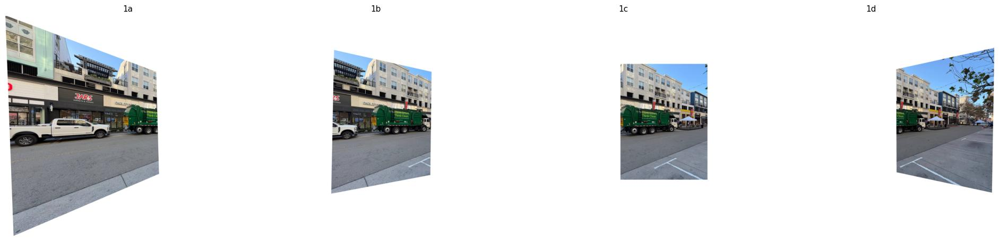
Blending
If one photo is simply put on top of the other, there is a hard edge where it ends, since the
brightness and colour of the photos are never exactly the same. Averaging the photos where they
overlap is better, but there is still a step in brightness at the edge of each photo. So each photo
gets a weight that is 0 at its edge and gets bigger towards its middle (its distance to the nearest
edge, from scipy.ndimage.distance_transform_edt), and the mosaic is the weighted average.
This is feathering: each photo fades out smoothly towards its edge.
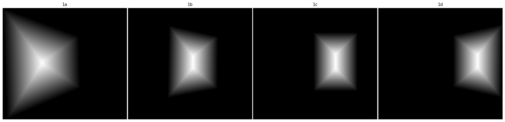
def feather(warped, alphas):
weights = [distance_transform_edt(a) for a in alphas]
total = sum(weights)
out = sum(w * wt[..., None] for w, wt in zip(warped, weights))
return out / np.maximum(total, 1e-8)[..., None], total > 0Feathering still has a problem when two photos are not lined up perfectly: the averaged area shows both copies at once, so fine detail looks doubled (ghosting). So I also used a 2 level Laplacian pyramid. Each warped photo is split into low frequencies (blurred with a Gaussian, sigma = 4) and high frequencies (the photo minus the blurred one). The low frequencies (colour and brightness) are feathered as above, so they still change smoothly. The high frequencies (edges and text) at each pixel are only taken from the photo with the biggest weight there, so they are never averaged with a second copy.
def two_band(warped, alphas):
weights = feather_weights(alphas)
total = sum(weights)
winner = np.argmax(weights, axis=0)
low_sum = np.zeros_like(warped[0])
high = np.zeros_like(warped[0])
for i, (w, a, wt) in enumerate(zip(warped, alphas, weights)):
low = low_pass(w, a)
low_sum += low * wt[..., None]
here = (winner == i) & (wt > 0)
high[here] = (w - low)[here]
out = low_sum / np.maximum(total, 1e-8)[..., None] + high
return np.clip(out, 0, 1), total > 0
low_pass only blurs the photo's own pixels (it blurs the photo times its alpha, and
divides by the blurred alpha), otherwise the black outside the photo would get blurred into its edges.
Set 1: Street
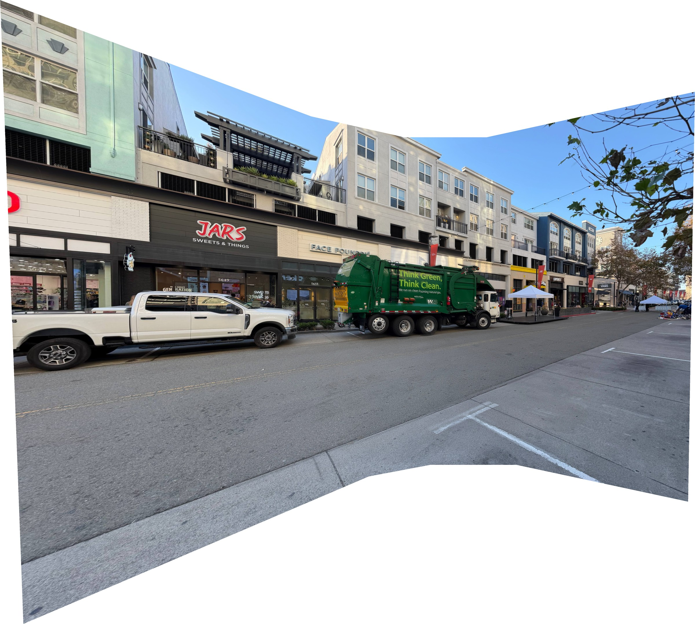
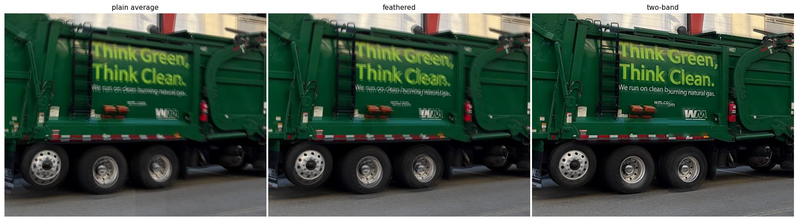
The building, the shop signs and the pickup all line up. The garbage truck does not quite line up, because of the parallax from A.2: the points are all on the building, and the truck is closer, so it is a few pixels off. With the plain average, the text on the truck is doubled and there is a visible line where each photo ends. Feathering gets rid of the lines but the text is still doubled. The two-band blend has no doubled text, but since the high frequencies switch from one photo to the other in a hard line, the text has a small break where they switch (between "b" and "urning" and in "wm.com"). The truck is the worst part of this mosaic, and the rest of it has no visible seams.
The left end is also very big. A flat mosaic keeps straight lines straight, but the further a photo is from the reference, the more it gets stretched, and 1a is two photos away. The edges of the mosaic have a bow-tie shape for the same reason.
Set 2: Toy shop

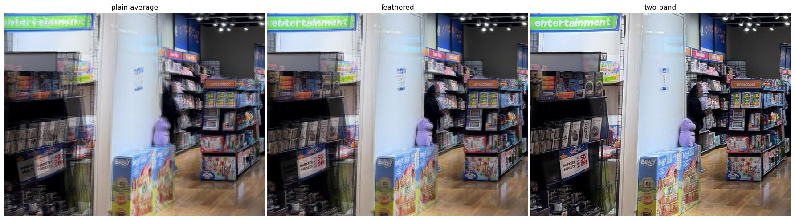
This was the hardest set, since I was standing close to the shelves and they are all at different distances. The far end of the shop lines up well, since all the points in 2f to 2h are there. In the close-up, the far shelves and the "preschool" sign line up in all three blends, but the black rack closest to the camera, its "50% OFF" sign and the green "entertainment" sign are doubled in the plain average and still doubled (just fainter) when feathered. The two-band blend only takes each of them from one photo, so they come out sharp. Between 2e and 2f, the points are on the big shelf unit (that is most of what the two photos share), so the shelf lines up there and the back wall is a bit off instead.
Set 3: Buildings
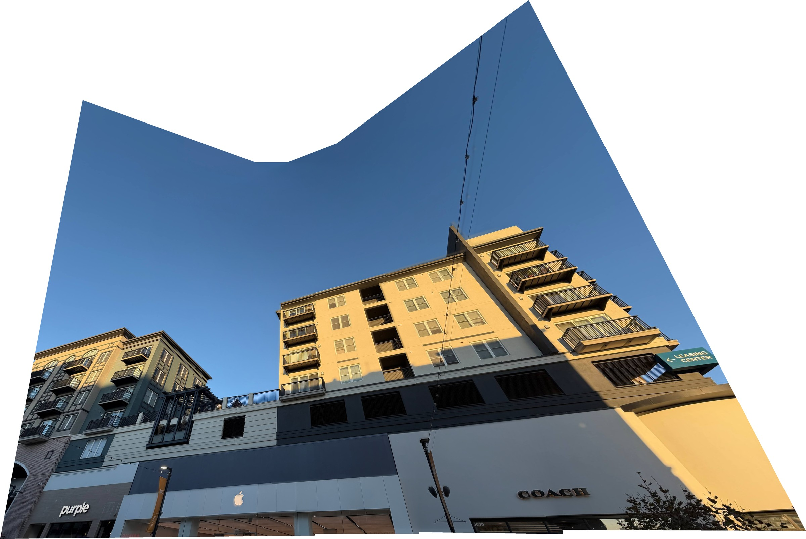
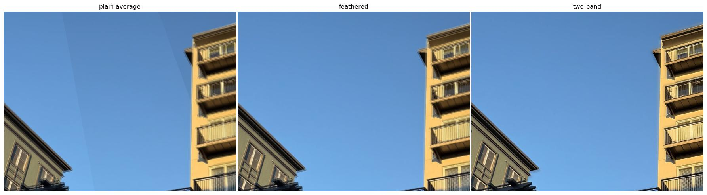
Everything here is far away, so there is hardly any parallax, and this is the cleanest mosaic. With the plain average there are visible steps in the sky where each photo ends, since the photos have slightly different exposure, and feathering removes them. Both still show the edges of the buildings slightly doubled, since the photos are a couple of pixels off (about the same as the errors in A.2). The two-band blend takes the edges from one photo only, so they are sharp, with just a faint light line along the roof edges where the blurred sky meets the building.